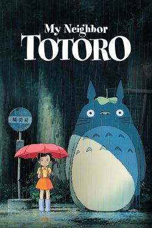
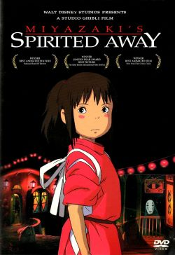
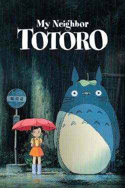
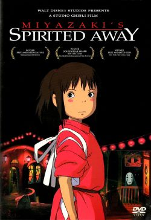

1) Hayao Miyazaki is a Japanese animator, filmmaker, and manga artist who is the founder of the well-known studio Ghibli who have made highly acclaimed feature films such as Spirited Away, Princess Mononoke, etc.
These are films that I have seen while growing up and have affected how I see certain aspects in cinema such as animation quality, visual storytelling, camera work, and more in regard to how to construct great cinema.
Even if you are bored by their stories, I would argue that they still have very organic and subtle ways to show storytelling which have inspired many other creators to closely follow what they did in production, music, and storytelling.
I have to give credit to the whole studio though as Miyazaki could not do everything, they did by himself. This studio is one of the first I think of to recall great animation, so I take a quite a bit of philosophies from them.
I could also list a few other anime studios as there are so many with their own style and also offer high quality productions.
2) Seba Jun, or better known as Nujabes, is considered the pioneer of lo-fi hip hop genre of music, a genre which at this point is so fast in the number of tracks it contains.
This is, in my opinion, a big deal for myself and for others since it is a genre tons and tons of people listen to but do not know the history and origins of.
Since I am a student for the majority of my life, I give huge credit to him since lo-fi is a genre I've listened to a lot since it is known to be calm background music.
His tracks though in comparison to modern day lo-fi definitely feel more "pronounced" and less in the background with the addition of vocals in many tracks as well as very melodic tunes.
Listening to lo-fi helps me think deeply about ideas or scenarios since they are so chill and come in many different styles.
3) LAM is an industry professional artist well-known for creating unique colorful anime illustrations using bold graphic elements. Also happens to have a graphic design and advertising backhground.
The specific things that make LAM'S art stand out to me are halftones in shadows within his painting techniques. This helps accentuate the bold use of saturated colors in the hair.
The colors LAM uses for his illustrations usually utilizes bright bold colors to grab peoples attention. The patterns, symbols, badges and pins commonly seen adds even more opportunities for color and style.
Lastly, the eyes really pop out to me. You look at the different illustrations and the eyes are varied a lot which is helped by the use of face paint around them that employ various graphic symbols.
 


